기계설계산업기사 (2010-09-05 기출문제)
1과목: 기계가공법 및 안전관리
1. 밀링작업에서 단식분할로 원주를 13등분 하고자 할 때 사용되는 분할판의 구멍수는?
- 37
- 38
- 39
- 41
(정답률: 84%)

2. 외경연삭기에서 외경 연삭의 이송방법이 아닌 것은?
- 테이블 왕복방식
- 연삭 숫돌대 방식
- 플랜지 컷 방식
- 내면 연수 방식
(정답률: 77%)
3. 안전표지에서 인화성 물질, 산화성 물질, 방사성 물질 등 경고 표지의 바탕색은?(오류 신고가 접수된 문제입니다. 반드시 정답과 해설을 확인하시기 바랍니다.)
- 빨강
- 녹색
- 노랑
- 자주
(정답률: 75%)
4. 공구의 수명을 판정하는 기준이 아닌 것은?
- 공구 인선의 마모가 일정량에 달했을 때
- 가공물의 완성치수 변화가 일정량에 달했을 때
- 절삭저항이 급격히 증가했을 때
- 표면에 광택 또는 반점이 있는 무늬가 없을 때
(정답률: 75%)
5. 트위스트 드릴 홈 사이드 좁은 단면 부분은?
- 날 여우
- 몸통 여유
- 지름 여유
- 웨브
(정답률: 71%)
6. 운반작업을 할 때의 작업 방법으로 틀린 것은?
- 물건을 들 때는 충격이 없어야 한다.
- 상체를 곧게 세우고 등을 반듯이 한다.
- 운반작업을 용이하게 하기위해 간단한 보조구를 사용한다.
- 물건은 무릎을 편 자세에서 들어 올리거나 내려놓아야 한다.
(정답률: 88%)
7. 핸드 탭은 일반적으로 몇 개가 1조로 되어 있는가?
- 2개
- 3개
- 4개
- 5개
(정답률: 68%)
8. 드릴작업의 안전사항으로 들린 것은?
- 드릴 소켓을 뽑을 때에는 드릴 뽑기를 사용한다,
- 얇은 판의 구멍 뚫기에는 보조 나무판을 사용한다.
- 구멍 뚫기가 끝날 무렵은 이송을 빠르게 한다.
- 장갑은 착용하지 않는다.
(정답률: 90%)
9. 밀링 부속장치 중 키 홈, 스플라인, 세레이션 등을 가공 할 때 사용하는 것은?
- 래크절삭장치
- 만능바이스
- 캠 연삭기
- 슬로팅 장치
(정답률: 66%)
10. 선반 작업시 가공물이 무겁고 대형일 경우 센터(center)선단의 각도는 몇 도의 것은 가용하는 것이 바람직한가?
- 45
- 60
- 90
- 120
(정답률: 52%)
11. 수퍼 피니싱(super finishing) 연삭액 중 일반적으로 사용되지 않는 것은?
- 경유
- 유화유
- 스핀들유
- 기계유
(정답률: 50%)
12. 선반가공에서 칩을 처리하기 위한 연삭형 칩 브레이커의 종류가 아닌 것은?
- 고정형
- 평행형
- 각도형
- 홈 달린형
(정답률: 29%)
13. 가늘고 긴 공작물의 연삭에 적합한 특징을 가진 연삭기는?
- 외경 연삭기
- 내경 연삭기
- 센터리스 연삭기
- 나사 연삭기
(정답률: 87%)
14. 제품의 형상과 모양, 크기, 재질에 따라 제작된 공구로서 압입 또는 인발에 의한 가공방법으로 대량생산에 적합한 장비는?
- 세이퍼
- 머시닝센터
- 브로칭머신
- CNC선반
(정답률: 61%)
15. 그림과 같은 사인바의 높이(H)를 구하는 공식은?
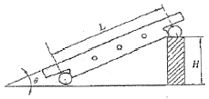
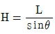
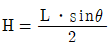
- H=Lㆍsinθ
- H=2(Lㆍsinθ)
(정답률: 54%)
16. 액체 상태의 기름에 9.81N/cm2 정도의 압축공기 이용하여 급유하는 방법으로 고속 연삭기, 고속 드릴 및 고속 베어링의 윤활에 가장 적합한 것은?
- 핸드 급유법
- 적하 급유법
- 분무 급유법
- 강제 급유법
(정답률: 57%)
17. 방전가공에서 전극재료의 구비조건이 아닌 것은?
- 기계가공이 쉬워야 한다.
- 방전이 안전하고 가공속도가 커야 한다.
- 가공절밀도가 높아야 한다.
- 가공전극의 소모가 빨라야 한다.
(정답률: 86%)
18. 선반 바이트에서 바이트 절인의 선단에서 바이트 밑면에 평행한 수평면과 경사면이 형성하는 각도는?
- 여유각
- 측면 절인각
- 측면 여유각
- 경사각
(정답률: 70%)
19. 안지름의 측정에 가장 적합한 측정기는?
- 텔레스코핑 게이지
- 깊이 게이지
- 레버식 다이얼 게이지
- 센터 게이지
(정답률: 57%)
20. 구성인선이 생기는 이유와 가장 거리가 먼 것은?
- 높은 압력
- 큰 마찰 저항
- 절삭 칩의 형태
- 절삭 열
(정답률: 68%)
2과목: 기계제도
21. 물체의 가공 면이 평면임을 표시하는 것으로 도면의 해당 부분에 대각선으로 그리는 선은?
- 가는 실선
- 가는 파선
- 굵은 실선
- 가는 2점 쇄선
(정답률: 77%)
22. 그림과 같이 3각법으로 두상한 도면에 가장 적합한 입체도 형상은?
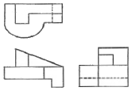
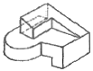
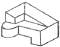
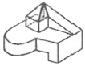
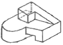
(정답률: 76%)
23. KS 재료기호 중 드로잉 용 냉간압연 강판 및 강대에 해당하는 것은?
- SCCD
- SPCC
- SPHD
- SPCD
(정답률: 48%)
24. 기준 B(직선 또는 편면) 에 대한 지정길이 100 mm에 대하여 평행도가 0.⑤ mm의 허용값을 가지는 것은 발게 나타낸 것은?
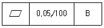
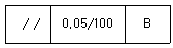
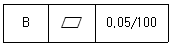
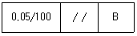
(정답률: 78%)
25. 기준치수가 Φ50인 구멍기준식 끼워 맞춤에서 구멍과 축의 공차 값이 다음과 같을 때 틀린 것은?
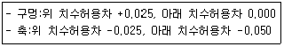
- 축의 최대 허용치수 : 49.975
- 구멍의 최소 허용치수 : 50.000
- 최대 틈새 : 0.075
- 최소 죔새 : 0.025
(정답률: 67%)
26. 보기와 같은 평면도 A, B, C, D와 정면도 1, 2, 3, 4가 올바르게 짝지워진 것은?
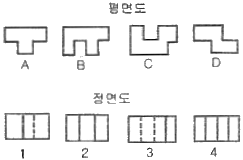
- A-2, B-3, C-3, D-1
- A-1, B-4, C-2, D-3
- A-2, B-4, C-3, D-1
- A-2, B-4, C-1. D-3
(정답률: 81%)
27. 물체의 일부분의 생략 또는 부분단면의 경계를 나타내는 선으로 직선을 사용하지 않고 자유로이 긋는 선은?
- 파단선
- 특수 지정선
- 지시선
- 무게 중심선
(정답률: 83%)
28. 다음 치수 중 치수 공차가 0.1이 아닌 것은?
- 50±0.1
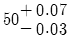
- 50±0.⑤
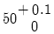
(정답률: 78%)
29. KS 재료 기호 중 용접 구조용 압연 강재 기호는?
- SM400A
- SPHD
- SS400
- SPP
(정답률: 40%)
30. 끼워 맞춤에서 H6/p6은 어떤 끼워 맞춤인가?
- 구멍기준식 중간 끼워 맞춤
- 구멍기준식 억지 끼워 맞춤
- 구멍기준식 헐거운 끼워 맞춤
- 구멍기준식 고정 끼워 맞춤
(정답률: 80%)
31. 코일 스프링의 제도에 관한 설명이다. 다음 설명 중 올바른 설명만을 모두 묶은 것은?
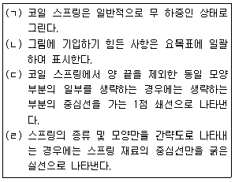
- (ㄱ) (ㄴ)
- (ㄱ) (ㄴ) (ㄹ)
- (ㄱ) (ㄴ) (ㄷ)
- (ㄱ) (ㄴ) (ㄷ) (ㄹ)
(정답률: 55%)
32. 축을 가공하기 위한 센터구멍의 도시 방법 중 그림과 같은 도시 기호의 의미는?
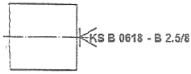
- 반드시 센터구멍을 남겨둔다.
- 센터구멍이 남아 있어도 좋다.
- 센터구멍이 남아 있어서는 안된다.
- 센터의 규격에 따라 다르다.
(정답률: 73%)
33. 동일 지름의 원통이 직각으로 교차할 때의 상관선으로 올바른 것은?
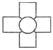
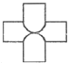
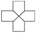
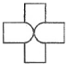
(정답률: 88%)
34. 경사부가 있는 대상물에서 경사면의 실형을 표시할 필요가 있는 경우 사용하는 투상도는?
- 관용 투상도
- 보조 투상도
- 회전 투상도
- 부분 투상도
(정답률: 64%)
35. 다음 도면에서 X 부분의 치수는 얼마인가?
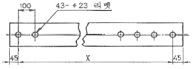
- 2200
- 2300
- 4200
- 4300
(정답률: 79%)
36. KS 재료기호 중에서 기계탄소강재를 표시하는 것은?
- STC
- SBC
- SM
- SS
(정답률: 52%)
37. 두께 4.5mm인 강판을 사용하여 보기와 같은 물탱크를 만들려고 할 때 필요한 강판의 질량은 약 몇 kg인가? (단, 강의 비중은 7.85로 계산하고 탱크는 전체 6면의 두께가 동일함)
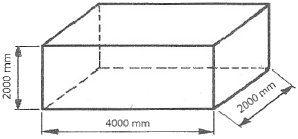
- 1238
- 1413
- 1536
- 1628
(정답률: 40%)
38. 보기 입체도에서 화살표 방향 투상도로 가장 적합한 것은?
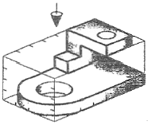
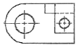
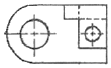
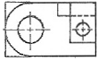
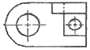
(정답률: 82%)
39. 그림의 입체도에서 화살표방향이 정면일 때 평면도로 적합한 것은?
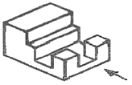
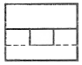
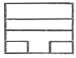
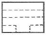
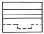
(정답률: 83%)
40. 맞물려 있는 각종 기어의 생략도를 나타낸 것 중 나사 기어의 간략 도시법인 것은?
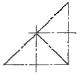
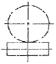
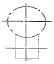
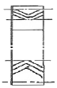
(정답률: 74%)
3과목: 기계설계 및 기계재료
41. 탄소가 0.25%인 탄소강의 기계적 성질을 0~500℃에서 조사하면 200~300℃에서 인장강도가 최대치를, 연신율이 최저치를 나타내며 가장 취약하게 되는 현상은?
- 고온 취성
- 상온 충격치
- 청열 취성
- 탄소강 충격값
(정답률: 67%)
42. 표면 경화법에서 금속 침투법이 아닌 것은?
- 세라다이징
- 크로마이징
- 칼로라이징
- 방전경화법
(정답률: 80%)
43. 다음 중 항온 열처리의 종류에 해당되지 않는 것은?
- 마템퍼링
- 오스템퍼링
- 마퀜칭
- 오스드로잉
(정답률: 73%)
44. 다음 중 소결경질합금이 아닌 것은?
- 위디아(Widia)
- 탕가로이(Tangaloy)
- 카보로이(Carboloy)
- 프레티나이트(Platinite)
(정답률: 52%)
45. 다음 중 강자성체가 아닌 것은?
- Ni
- Cr
- Co
- Fe
(정답률: 47%)
46. 알루미늄 합금인 두랄루민의 표준성분에 포함된 금속이 아닌 것은?
- Mg
- Cu
- Ti
- Mn
(정답률: 79%)
47. 황동에서 잔류응력에 의해서 발생하는 현상은?
- 탈아연 부식
- 고온 탈아연
- 저온 풀림경화
- 자연균열
(정답률: 67%)
48. Fe-C 상태도 상에 나타나는 조직 중에서 금속간 화합물에 속하는 것은?
- Ferrite
- Cementite
- Austenite
- Pearlite
(정답률: 47%)
49. 피절삭성이 양호하여 고속 절삭에 적합한 강으로 일반 탄소강보다 인(P), 황(S), 함유량을 많게 하거나 납(Pb), 셀레늄(Se), 자르코늄(Zr) 등을 첨가하여 제조한 강은?
- 쾌삭강
- 레일강
- 스프링강
- 탄소공구강
(정답률: 78%)
50. 다음 중 가열 시간이 짧고, 피가열물의 스트레인을 최소한으로 억제하며, 전자 에너지의 형식으로 가열하여 표면을 경화시키는 방법은?
- 침탄법
- 질화법
- 시안화법
- 고주파 담금질
(정답률: 70%)
51. 역류(逆流)를 방지하여 유체를 한쪽 방향으로만 흘러가게 하는 밸브는?
- 게이트 밸브
- 안전 밸브
- 체크 밸브
- 버터프라이 밸브
(정답률: 79%)
52. 하중 3kN이 걸리는 압축코일 스프링의 변형량이 10mm일 때 스프링 상수는 몇 N/mm인가?
- 300
- 1/300
- 100
- 1/100
(정답률: 65%)
53. 축선에서의 약간의 어긋남을 허용하면서 충격과 진동을 감소시키는 축이음은?
- 유니버셜조인트
- 플렉시블 커플링
- 클램프 커플링
- 올덤 커플링
(정답률: 53%)
54. 직경 50mm의 축이 78.4Nㆍm의 비틀림 모멘트와 49.0Nㆍm의 굽힘 모멘트를 동시에 받을 때, 축에 생기는 최대전단응력은 몇 MPa인가?
- 2.88
- 3.77
- 4.56
- 5.79
(정답률: 40%)
55. 베어링 하중 4.9kN, 회전수 4000rpm일 때 기본 부하 용량이 61.74kN인 블 베어링의 수명은 약 몇 시간인가?
- 8335 시간
- 19229 시간
- 9615 시간
- 16666 시간
(정답률: 34%)
56. 세로탄성계수 E(N/mm2)와 응력 σ(N/mm2), 세로 변형률 ε과의 관계식으로 맞는 것은?
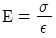
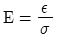
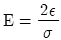
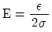
(정답률: 54%)
57. 다음 중에서 가장 큰 동력을 전달할 수 있는 것은?
- 안장 키
- 묻힘 키
- 납작 키
- 스플라인
(정답률: 71%)
58. 지름 20mm, 길이 500mm인 탄소강재에 인장하중이 작용하여 길이가 502mm가 되었다면 변형률은?
- 0.01
- 1.004
- 0.02
- 0.004
(정답률: 42%)
59. 암나사와 수나사가 결합되어 있을 때 암나사를 3회전 하였더니 축 방향으로 15mm, 산수는 6산 나간다. 이와 같은 나사의 조건은?
- 피치 2.5mm, 리드:5mm
- 피치 2.5mm, 리드:2.5mm
- 피치 2.5mm, 리드:10mm
- 피치 5mm, 리드:5mm
(정답률: 65%)
60. 임의 점에서 직선 거리 L만큼 떨어진 곳에서 힘 F가 직선방향에 수직 하게 작용할 때 발생하는 모멘트 M을 바르게 나타낸 것은?
- M=F×L
- M=F/L
- M=L/F
- M=F+L
(정답률: 66%)
4과목: 컴퓨터응용설계
61. 생성하고자 하는 곡선을 근사하게 포함하는 다각형의 꼭짓점들을 이용하여 정의되는 Bezier 곡선에 관한 기술로서 올바르지 않은 것은?
- 생성되는 곡선은 다각형의 양끝점을 반드시 통과한다.
- 다각형의 첫째 선분은 시작점에서의 접선벡터와 반드시 같은 방향이다.
- 다각형의 마지막 선분은 끝점에서의 접선벡터와 반드시 같은 방향이다.
- n개의 꼭짓점에 의해서 생성된 곡선은 n차 곡선이 된다.
(정답률: 75%)
62. 모든 유형의 곡선(직선, 스플라인, 원호 등) 사이를 경사지게 자른 코너를 말하는 것으로 각진 모서리나 꼭지점을 경사있게 깍아 내리는 작업은?
- Hatch
- Fillet
- Rounding
- Chamfer
(정답률: 77%)
63. 설계해석 프로그램의 결과에 따라 응력, 온도 등의 분포도나 변형도를 작성하거나, CAD 시스템으로 만들어진 형상 모델을 바탕으로 NC공작기계의 가공 data를 생성하는 소프트웨어 프로그램이나 절차를 뜻하는 것은 무엇인가?
- Pre-processor
- Post-processor
- Multi-processor
- Co-processor
(정답률: 68%)
64. 10진수로 표시된 11을 2진수로 나타낸 것은?
- 1100
- 1110
- 1101
- 1011
(정답률: 72%)
65. CAD 용어에 대한 설명 중 틀린 것은?
- resolution:이미지를 화면에 얼마나 정밀하게 디스플레이 할 것인가를 나타내는 가로, 세로의 픽셀의 수
- segment:하나의 다항식으로 표현된 커브의 일부분
- snap:화면 표시 장치에서 도면의 위치를 시각적으로 잘 알아볼 수 있도록 하기 위해 임의의 간격으로 그려주는 보조점
- drag:컴퓨터 마우스를 이용한 끌기 작업
(정답률: 46%)
66. 와이어 프레임(wire frame) 모델의 특징이 아닌 것은?
- 물리적 성질의 계산이 가능하다.
- 처리속도가 빠르다.
- 숨은선 제가가 불가능하다.
- 해석용 모델에 사용이 불가능하다.
(정답률: 78%)
67. 다음과 같은 2차원 좌표 변환 행렬에서 데이터의 이동에 관련되는 요소는?
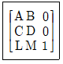
- A, B
- C, D
- L, M
- A, D
(정답률: 68%)
68. 그림이나 사진과 같은 종이 위의 이미지(lmage)에 대해 광학적으로 주사하여 그 반사광이나 투과강을 계산해 디지털 데이터로서 읽어서 컴퓨터에 입력하는 것이 가능한 장치는?
- 스캐너
- 터치 패널
- 플로터
- 마우스
(정답률: 81%)
69. 1964년 발표된 것으로 4개의 모서리점과 4개의 경계곡선으로 곡면을 표현하는 것은?
- Bezier 곡면
- Ferguson 곡면
- B-spline 곡면
- Coons 곡면
(정답률: 76%)
70. 다음은 베지어(Bezier)곡선의 특징을 설명한 것이다. 이 중 잘못된 것은 무엇인가?
- 곡선은 조정점(control point)을 통과 시킬 수 있는 다각형의 바깥쪽에 위치한다.
- 곡선은 양끝점의 조정점을 통과한다.
- 1개의 조정점 변화는 곡선 전체에 영향을 미친다.
- n개의 조정점에 의하여 정의되는 곡선은 (n-1)차 곡선이다.
(정답률: 60%)
71. 그림과 같이 평면상의 두 벡터
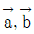
로 이루어진 평행사변형의 넓이를 구한 식으로 맞는 것은?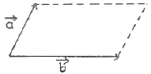
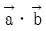
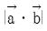
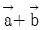
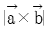
(정답률: 57%)
72. 양국 과녁과 같이 간격을 가진 여러개의 동심원으로 구성되는 형상을 만들려고 한다. 다음 중 가장 적절하게 사용될 수 있는 기능은?
- zoom
- move
- offset
- trim
(정답률: 87%)
73. 서로 다른 CAD시스템의 설계정보를 교환하기 위한 데이터 교환 표준에 해당하지 않는 것은?
- IGES
- DXF
- GUI
- STEP
(정답률: 77%)
74. (x, y) 평면에서 두 점(-5, 0), (4, -3)을 지나는 직선의 방정식은?
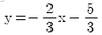
(정답률: 58%)
75. 컴퓨터 시스템 장치 중 산술 및 논리 연산을 수행할 수 있는 장치는?
- 입력 장치
- 중앙처리 장치
- 보조 기억 장치
- 출력 장치
(정답률: 83%)
76. 3차원 도형을 정의하여 부품을 모델링하는데 공학적인 해석이나 물리적 성질까지 포함되는 모델링 방법은?
- 와이어 프레임 모델(wire frame model)
- 서피스 모델(surface model)
- 솔리드 모델(solid model)
- 경계표현 모델(boundary model)
(정답률: 81%)
77. 유기 전계 발광 소자를 사용한 표시창치로 전자빔이 형광막과 충돌로 방광하는 브라운관(CRT)과 유사한 동작이 유리기판 위에 형성되어 화면을 나타내는 장치는?
- Organic electroluminescent display
- Liquid crystal display
- Plasma panel
- Image scanner
(정답률: 53%)
78. 솔리드 모델링에서 CSG 방식과 비교한 B-rep 방식의 특성이 아닌 것은?
- 필요 메모리가 적음
- 전개도 작성 용이
- 표면적 계산 쉬움
- 화면의 재생시간이 적게 걸림
(정답률: 52%)
79. (x, y) 좌표 상에 중심이 (m, n)이고 반지름이 r인 원의 형상을 표현하는 식은?
- (x+m)+(y+n)=r2
- (x-m)2+(y-n)2=r2
- x2+y2=r2-m-n
- x2+m-y2-n=r2
(정답률: 66%)
80. 3차원 솔리드 모델을 구성하는 요소 중 기본 형상 (Primitive)이라고 할 수 없는 것은?
- 구(Sphere)
- 원통(Cylinder)
- 직선(Line)
- 원추(Cone)
(정답률: 75%)